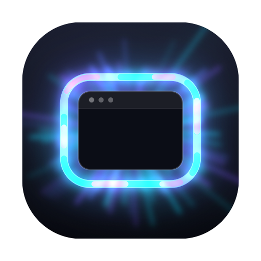

You can always see where your pointer is. You can't see where your keyboard is. Nimbus draws a ring of light around the window that has focus.
Anything constant fades from awareness. Psychologists call the general effect habituation, and the version where your receptors themselves stop responding to an unchanging stimulus sensory adaptation. Interface designers meet it as banner blindness: people stop seeing the thing in the same place, in the same colour, every day — even when they are looking for it.
A static border around a window would work beautifully for a week and be invisible by the end of the month. So Nimbus does two things about it. The ring never stops moving, because the eye is far better at detecting change than steady state. And the colour scheme rotates, so no single look ever becomes the background you have learned to ignore.
Rotation above is sped up so you can see it. In the app it defaults to every 30 minutes, and is configurable from 10 minutes to never. It also changes when you wake the machine — coming back to your desk is exactly when noticing it matters most.
macOS marks the focused window with a slightly darker title bar. On one screen that's subtle. Across several it's invisible. So you come back to your desk, start typing, press Enter — and it goes somewhere you didn't expect.
Nimbus makes that state impossible to miss. The ring is always moving, so your eye keeps registering it instead of filtering it out, and it flares brighter for a couple of seconds whenever focus changes.
Nimbus needs Accessibility permission, which is the most powerful thing a Mac app can ask for. So here is exactly what it does with it, and all of it is checkable in the source.
It only ever reads, and it reads six things: which window has focus, a window's parent, its position, its size, its role and its subrole. Not window titles. Not text. Not contents. It never moves or closes anything, never records the screen, and never makes a network connection of any kind.
Why Accessibility at all? It is the only supported way to find out which
window has keyboard focus. The alternative,
CGWindowListCopyWindowInfo, can't report focus — only
stacking order — and is increasingly gated behind Screen Recording, which
is far more invasive.
The animation above is the real shader, ported from Metal to WebGL, drawing a simulated desktop. It is representative rather than pixel-exact — the app itself draws over your actual windows, and its ring is transparent in the middle so it never covers what you're working on.